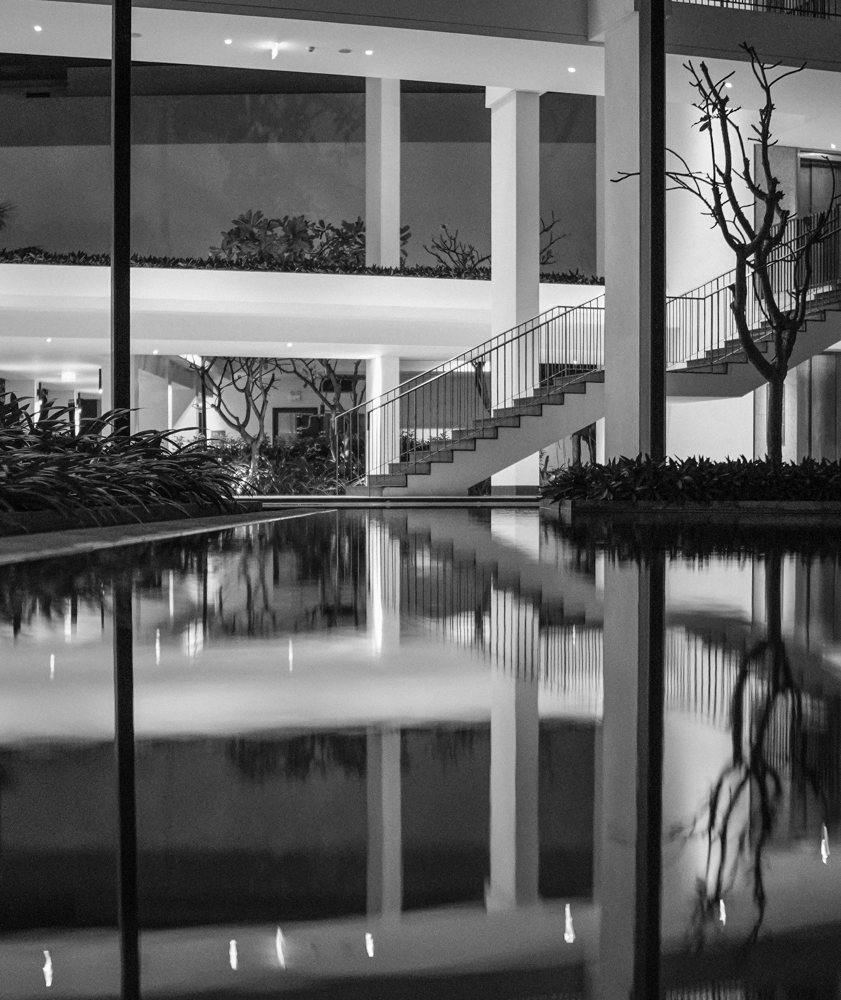
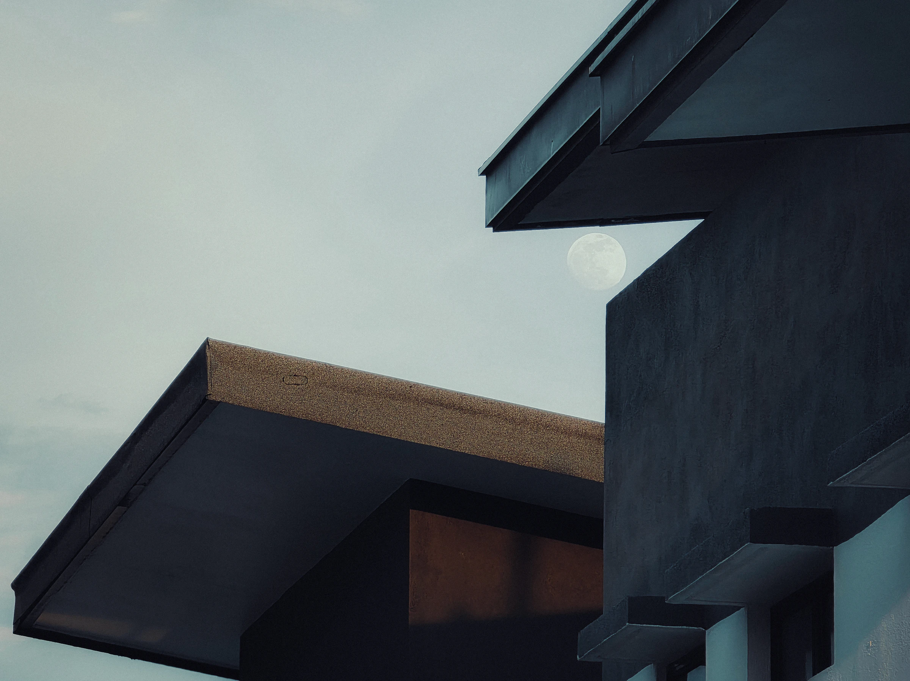
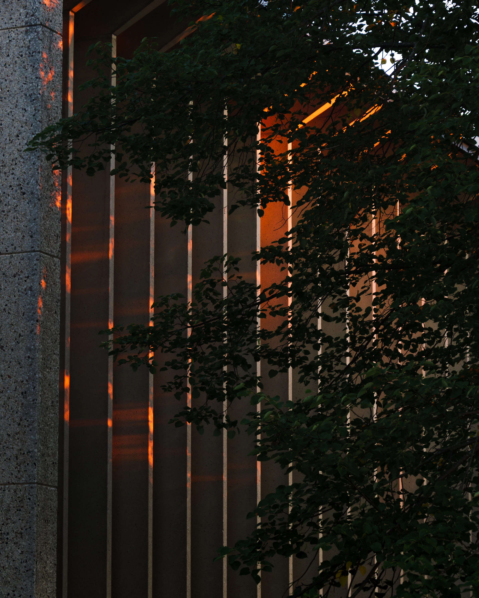
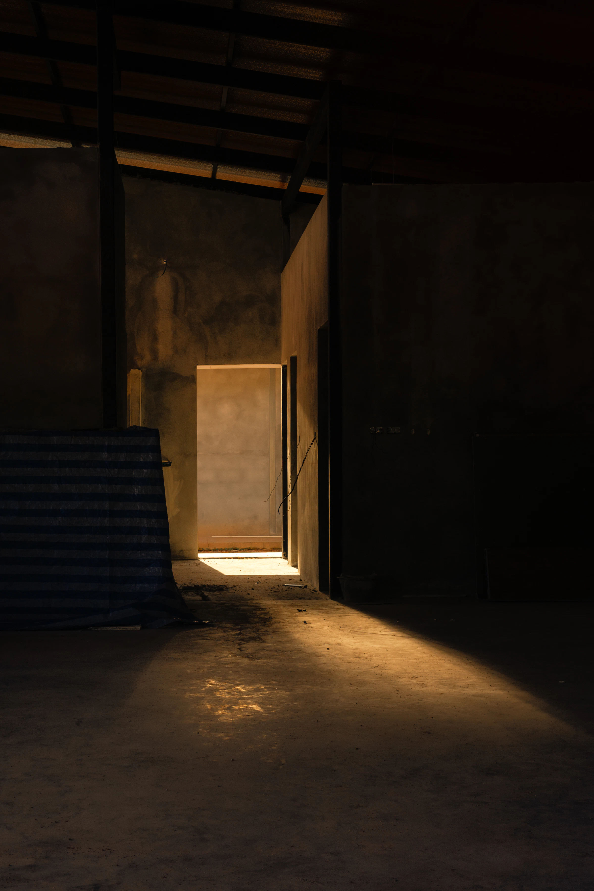
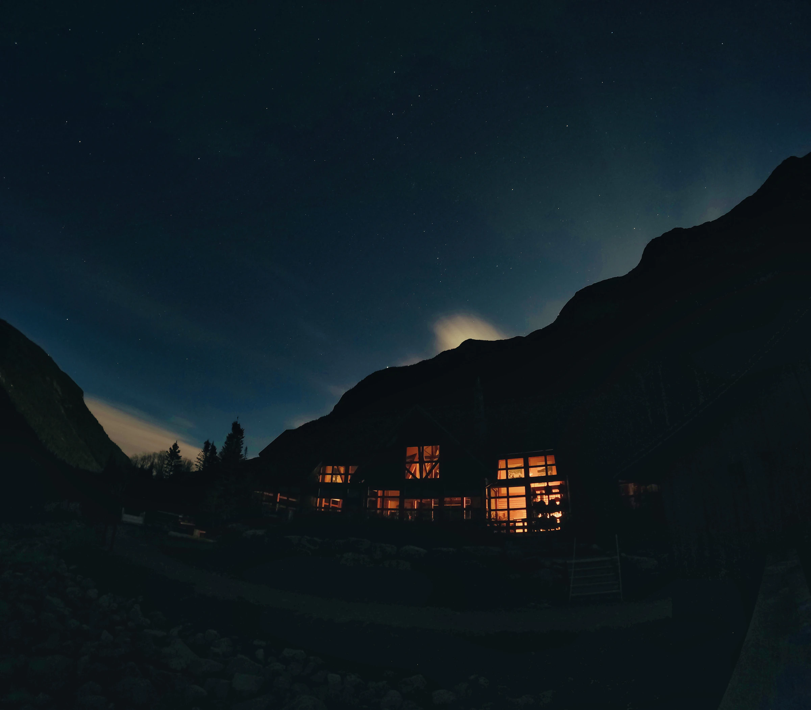
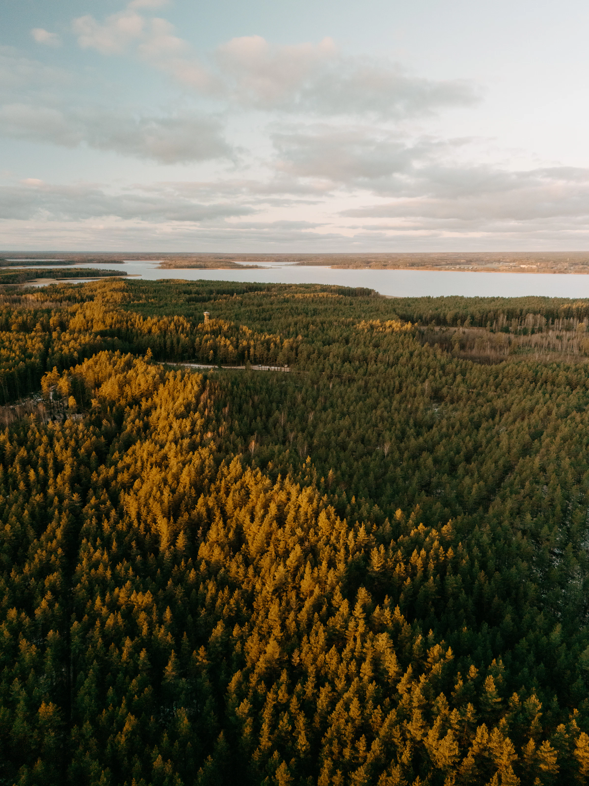

Двадцать лет «Грань» создаёт жилые и загородные проекты, в которых
архитектура, природа и повседневная жизнь работают как одно целое.
От первого эскиза до передачи ключей мы ведём каждый проект сами
и отвечаем за результат.